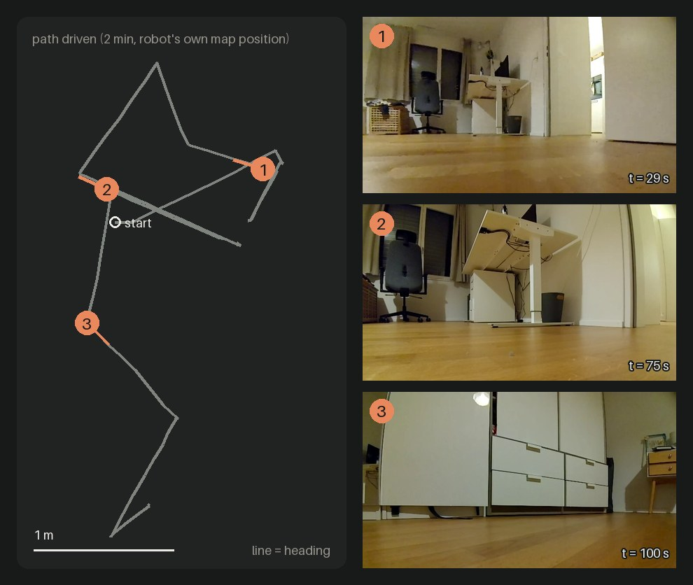
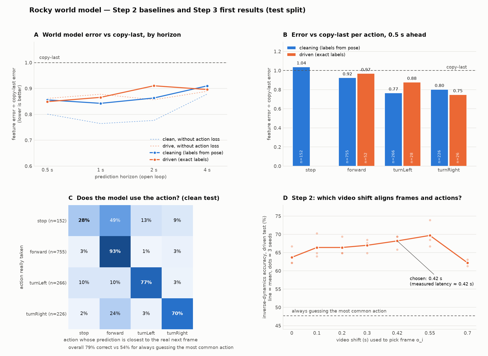
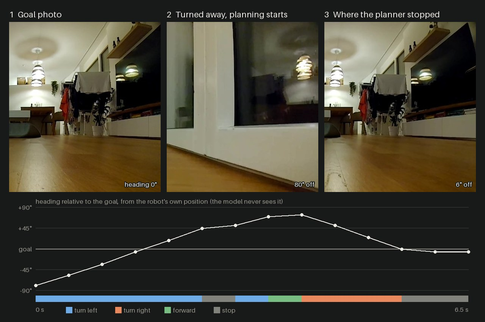

I wanted to learn how world models work by building one on real hardware: my robot vacuum.
A world model predicts what the robot will see next, given what it sees now and the action it takes.
With that, the robot can try actions in its head before doing them.

One of the recorded drives: the path and three frames from the robot's camera.
The setup
How it works
Control and camera. The vacuum has no public API for driving, so I found the move command in the app's traffic and sent it with the open-source deebot-client. I also read the camera's video stream (WebRTC) in Python.
Data. I drove it around with random commands and recorded a one-hour cleaning run: a camera frame, the action and the robot's position, twice per second, about 1.1 hours in total.
Model. A frozen DINOv2 encoder turns each frame into features. A small transformer learns to predict the next frame's features from the last few frames and the action.
Planning. To reach a goal image, the robot imagines every short sequence of actions with the model, takes the first step of the best one, and plans again half a second later.
Where it stands
Prediction. The model predicts better than the simplest guess, "nothing changes", at every horizon up to 4 seconds (9–16% less error up to 2 seconds), and its predictions depend on the action: from them, the action the robot really took can be picked out 79–82% of the time.
Planning on recordings. With the real frame 1 second later as the goal, the actions the robot really took usually rank first of the 16 possible plans. When the robot really turned, the planner turns the same way 81–88% of the time.

Model results on held-out recordings (the last 20% in time).
On the robot
For the live test, the robot takes a goal photo, gets turned away, and has to find that view again using only its camera and the model.
This is the run that worked: turned 80° away, it turned back, went past the goal, came back and stopped 6° from it by itself.

A live run on the robot. The heading comes from the robot's own position and is only used for this chart; the model never sees it.
So far it works in 1 of 10 tries. In most of the others the robot didn't move: the goal only looks close once it is within about 20°,
and my recordings barely show the robot starting from standstill. Recording drives that start and stop is the next step.